Demon Slayer : Kimetsu no Yaiba
Enter the Taisho Era, where humanity stands on the brink of darkness. Below is a curated archive of the Hashira and the slayers who wield distinct Breathing Styles to protect the innocent from the eternal night.
Demon Slayer Corps
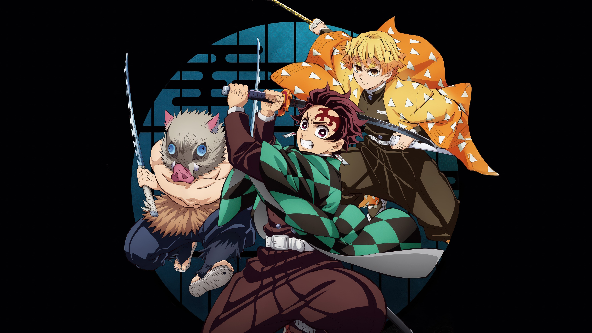
The core trio of the series. Tanjiro’s kindness, Zenitsu’s hidden power, and Inosuke’s wild instinct combine to face the toughest demons in their path.
Giyu Tomioka
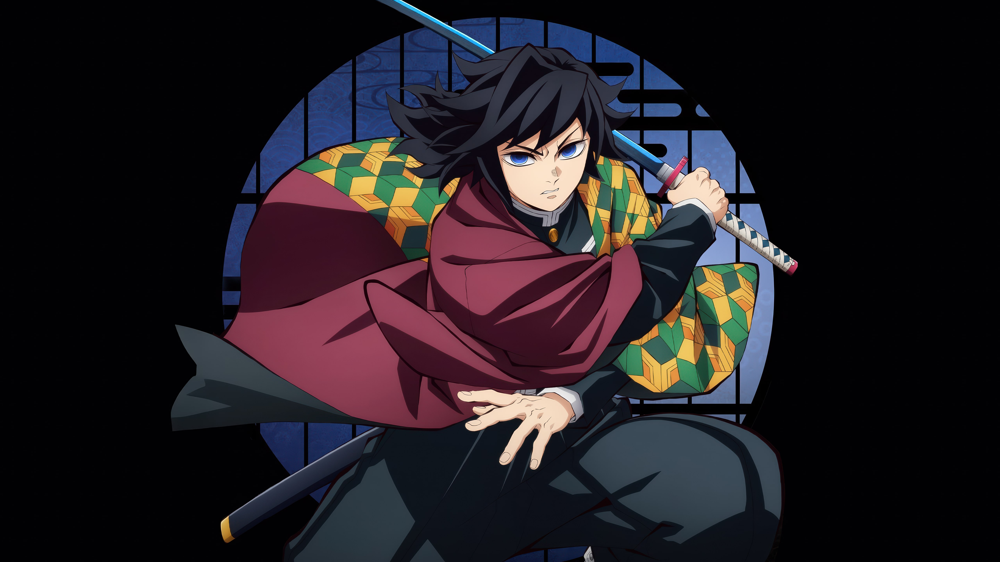
The Water Hashira. Stoic and disciplined, Giyu masters the Water Breathing technique with fluid precision, striking down demons with a calm, deadly grace.
Tanjiro Kamado
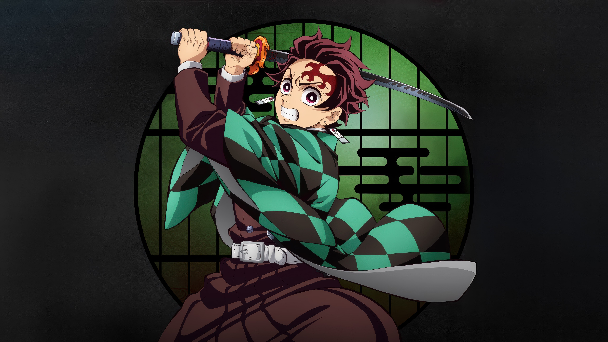
A kind-hearted slayer wielding the black blade. Driven by love for his sister, he masters Water Breathing and the legendary Hinokami Kagura to protect humanity.
Sanemi Shinazugawa
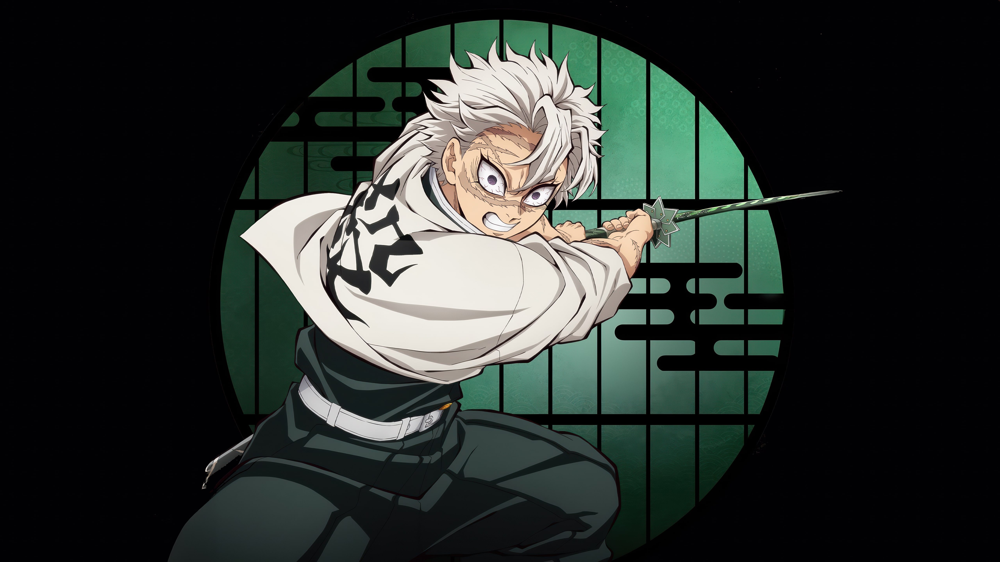
The Wind Hashira. Aggressive and scarred from countless battles, Sanemi’s Wind Breathing creates slicing tornadoes that shred enemies apart without mercy.
Mitsuri Kanroji
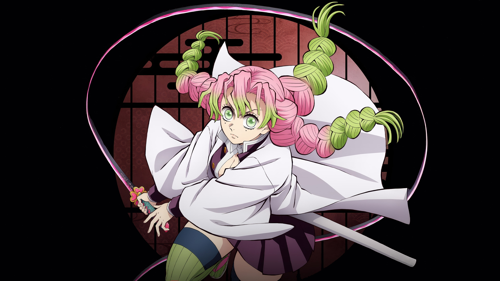
The Love Hashira. With her unique flexible sword and superhuman strength, Mitsuri fights with a passionate, acrobatic style that is impossible to predict.
Tengen Uzui
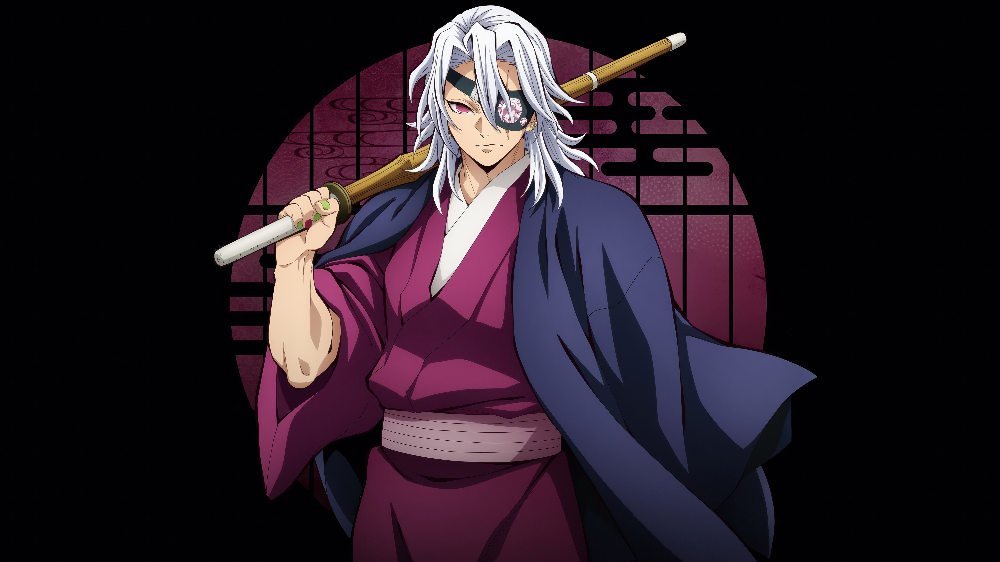
The Sound Hashira. Flamboyant and flashy, this former shinobi uses dual cleavers and explosives to turn the battlefield into a spectacular display of destruction.
Obanai Iguro
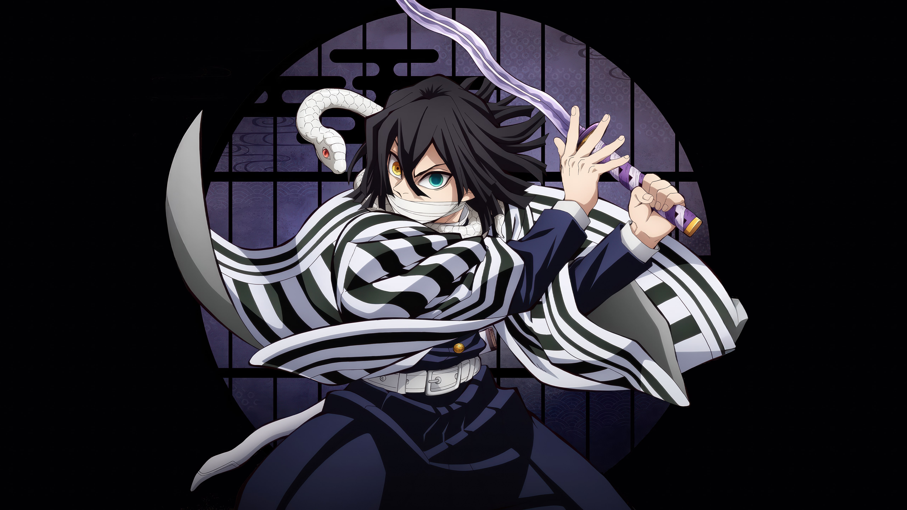
The Serpent Hashira. Calculating and strict, Obanai uses a twisting sword style that mimics a snake's movement to strike his opponents from impossible angles..
Zenitsu Agatsuma
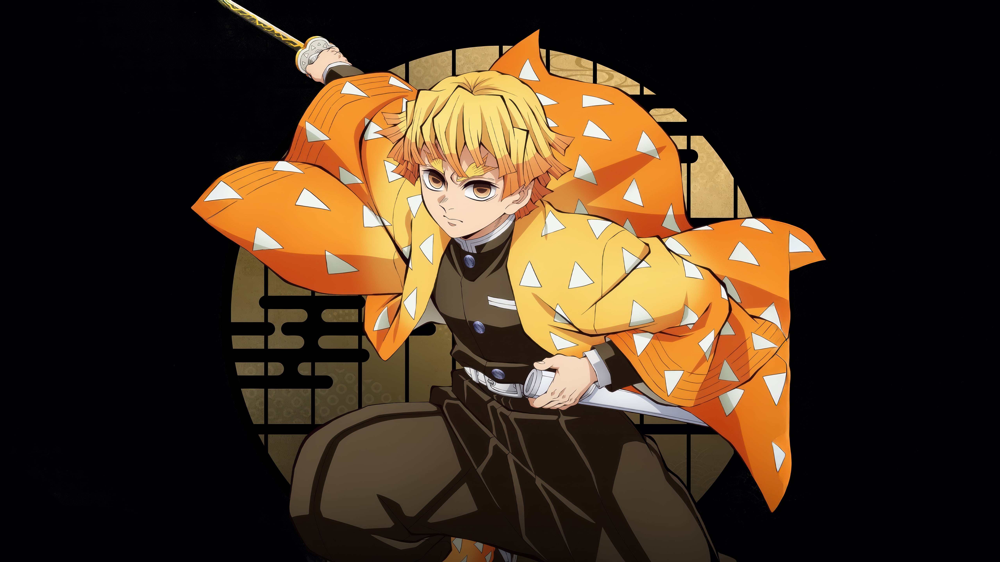
A cowardly boy who falls asleep from fear, only to awaken his true potential. His Thunder Breathing relies on godspeed velocity to decimate foes in an instant.
Thunder Breathing
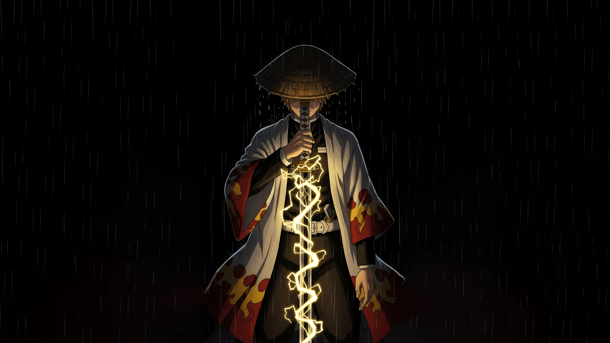
Zenitsu at his peak. Mastering the Thunderclap and Flash, he moves like actual lightning, ending battles in a single, deafening strike before the enemy reacts.
Muichiro Tokito
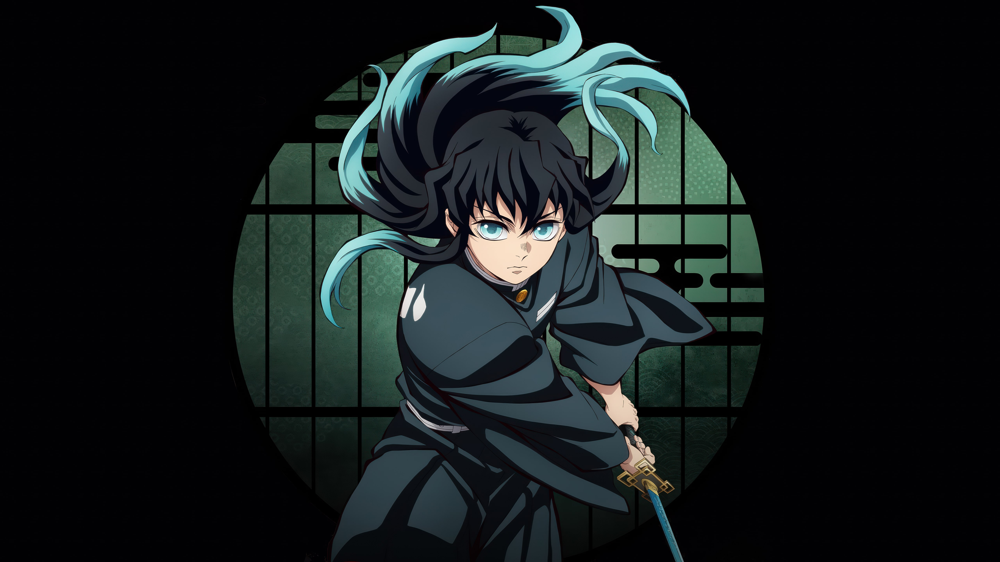
The Mist Hashira. A young prodigy who mastered the sword in mere months. His Mist Breathing obscures his movements, confusing enemies before he strikes with cold, logical precision.
Inosuke Hashibira
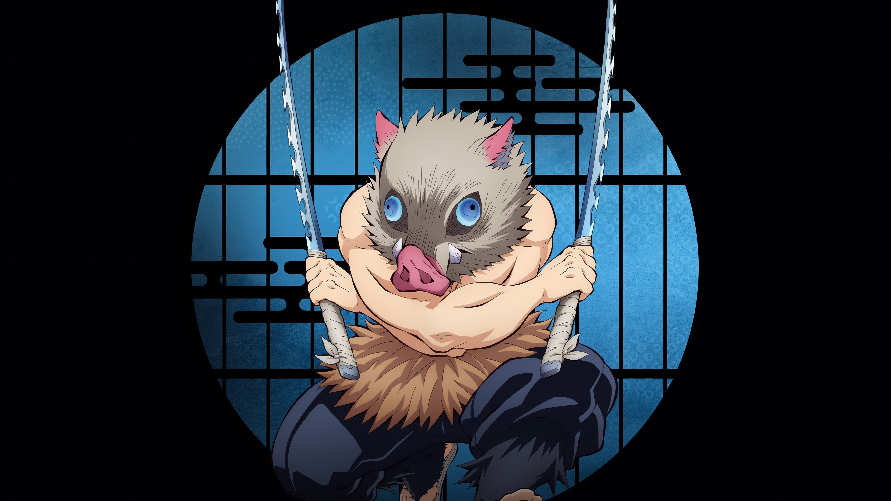
A wild slayer raised by boars. Wielding dual chipped blades and using self-taught Beast Breathing, Inosuke fights with raw instinct and aggressive unpredictability that overwhelms his foes.
Set Your Heart Ablaze.
The battle against the Upper Moons is far from over. Whether you align with Water, Mist, or Beast Breathing, the legacy of the Corps lives on. The dawn will come for those who fight.